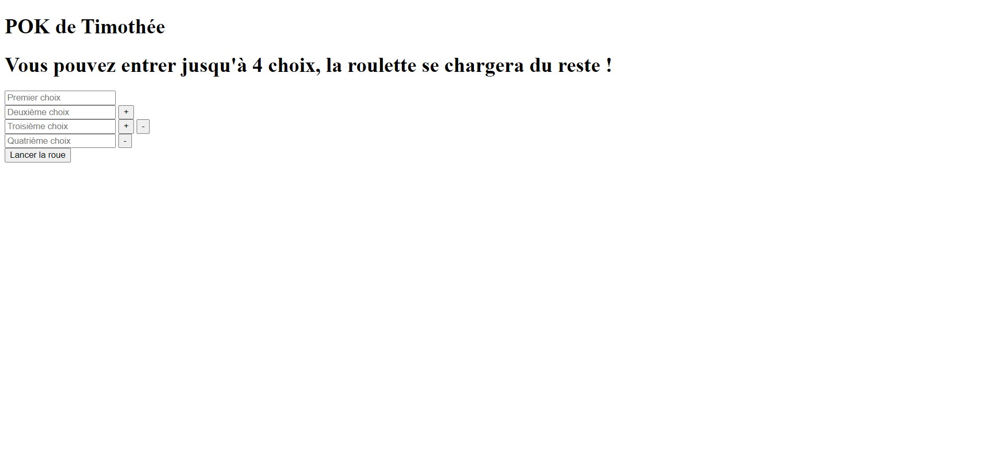
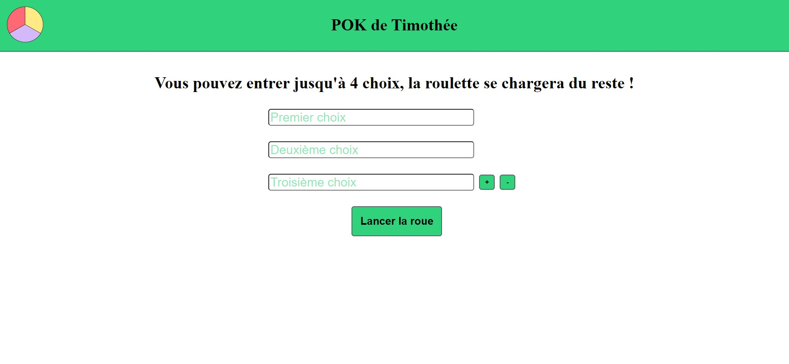
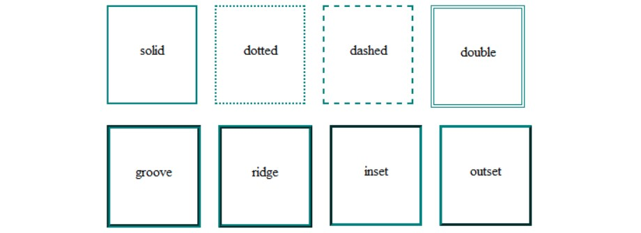
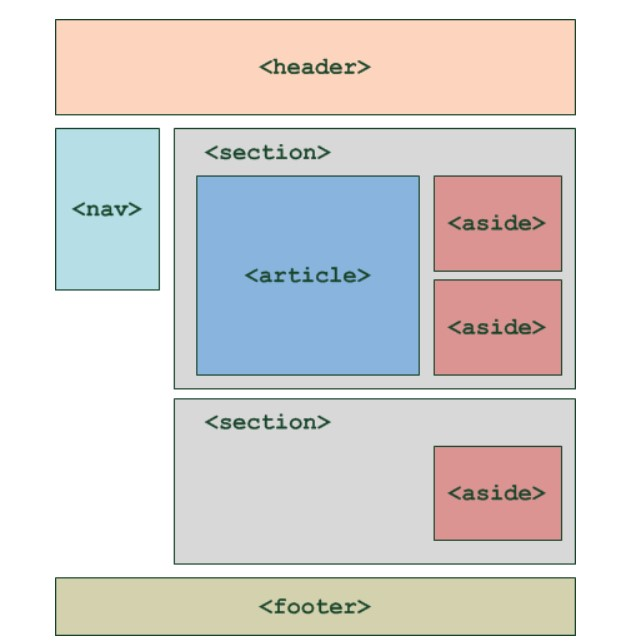
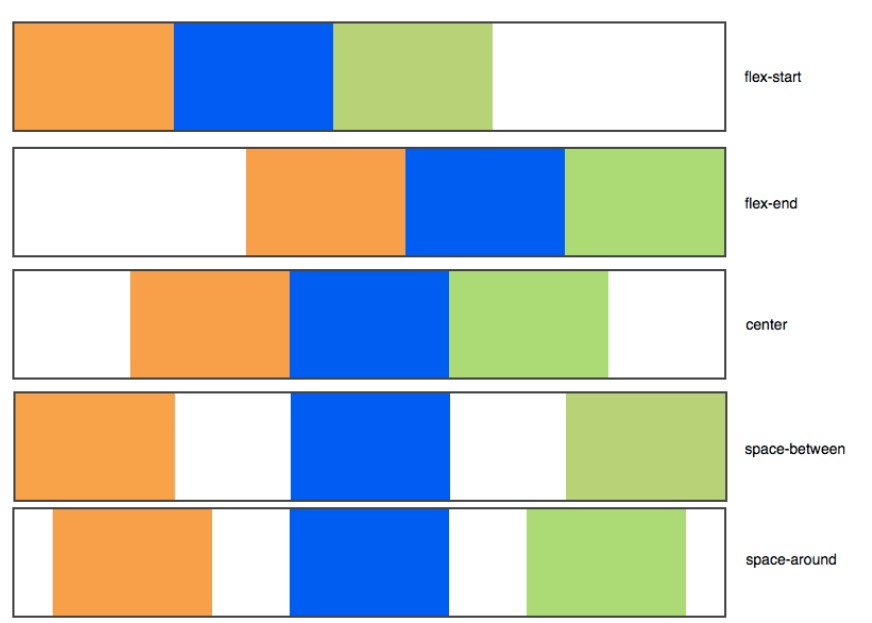
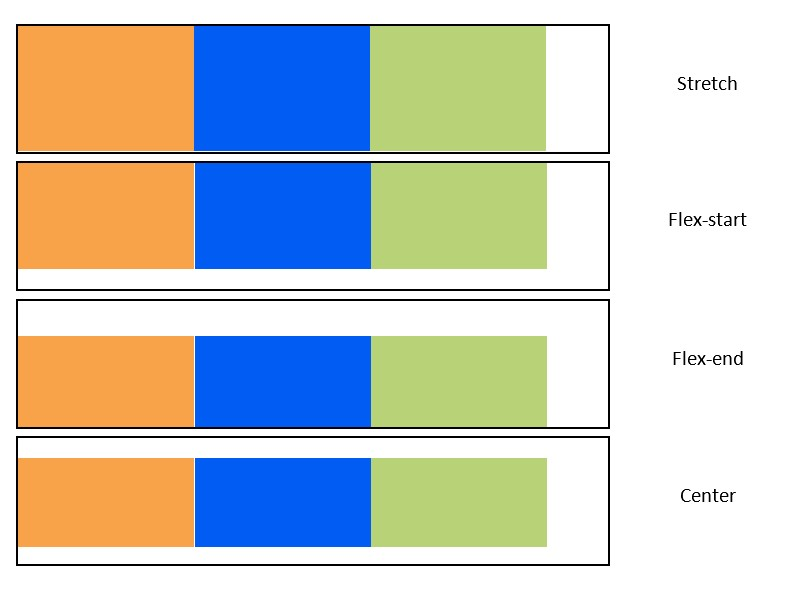

CSS, animation, SASS
- Timothée Bermond
Les bases du CSS, les animations et introduction au SASS
Les bases du CSS
J'ai tout d'abord commencé par suivre la partie sur le CSS de cette formation openclassrooms.
Le CSS permet de faire la mise en forme son site (couleur du texte, police, mise en page,...).
 Mon POK sans css.  Mon POK avec css.Le CSS peut-être écrit dans un fichier .css (recommandé), dans l'en-tête du fichier html à l'aide d'une balise style ou directement dans les balises (non recommandé). Utiliser un fichier .css permet de facilement généraliser les propriétés à toutes nos pages html sans avoir à faire des copié-collé.
Pour appliquer un style nous pouvons sélectionner :
- une balise
- une classe
- un id
Pour ce faire on écrit le nom de la balise / classe / id puis on ajoute entre acolades les propriétés que l'on veut appliquer.
balise{
propriété1: valeur1;
propriété2: valeur2;
}
Pour chaque propriété on doit indiquer une valeur.
On peut égalemement appliquer un style à plusieurs balises en les séparant d'une virgule.
balise1, balise2{
propriété1: valeur1;
propriété2: valeur2;
}
Formater du texte
Il est possible de modifier de nombreuses caractéristiques du texte.
La taille
Il est possible de modifier la taille du texte avec la propriété font-size. On peut indiquer une taille absolue ou une taille relative.
- Taille absolue
On indique le nombre de pixels (ou cm, mm mais plus rare) :
p{
font-size: 14px;
}
- Taille relative
On peut écrire la taille en mot anglais :- xx-small
- x-small
- small
- medium
- large
- x-large
- xx-large
Ou indiquer la taille en em : - 1em : taille normale
- '>'1em : grossi le texte
- <1em : rétrécit le texte
p{
font-size: 1.8em;
}
La police
Pour modifier la police il faut utiliser la propriété font-family suivi d'au moins une police. Le mieux est d'indiquer au moins 4 polices (séparées par des virgules) au cas où l'internaute n'aurait pas la 1ère police. (le navigateur essaiera tout d'abord d'utiliser a police1, s'il ne l'a pas il essaiera la police2, etc...)
Italique
Pour mettre en italique on utilise la propriété font-style et la valeur italic.
Gras
Pour mettre en gras on utilise la propriété font-weight et la valeur bold.
Souligné
Pour souligner ou décorer le texte on utilise la propriété text-decoration et les valeurs :
- underline : souligné;
- line-through : barré;
- overline : ligne au-dessus.
On peut également indiquer la valeur none si on veut annuler une des propriétés précédentes.
L'alignement
Il est possible d'appliquer tous les alignements connus avec la propriété text-align et les valeurs :
- left : aligné à gauche;
- center : centré;
- right : aligné à droite;
- justify : justifié.
Ajouter de la couleur et un fond
Couleur du texte
On peut modifier la couleur du texte avec la propriété color. Pour les valeurs il y a plusieurs choix possibles :
- indiquer le nom de la couleur (en anglais), problème : avec cette méthode vous n'avez accès qu'à 16 couleurs que je ne listerai pas ici;
- utiliser la notation hexadécimale qui consiste à utiliser un # suivi de 6 caractères qui se lisent 2 par deux indiquant la quantité de rouge, de vert et de bleu;
- utiliser la méthode RGB, pour cela il faut taper rgb(Rouge, Vert, Bleu).
Couleur de fond
Pour cela on utilise la propriété background-color et les mêmes valeurs que précédemment.
Image de fond
Pour cela on utilise la propriété background-image et en valeur url("nom_de_l_image.png").
Avec la propriété background-attachment on peut décider :
- de faire défiler l'image de fond avec le texte : scroll;
- de laisser fixe l'image de fond : fixed.
Il est également possible de répéter ou non l'image de fond avec la propriété background-repeat.
Ou encore d'indiquer la position de l'image de fond avec la propriété background-position.
Transparence
Il est possible de jouer avec les niveaux de transparence des éléments avec la propriété opacity qui prend une valeur entre 0 et 1 (1:opaque, 0:transparent) ou en utilisant la notation RGBa qui consiste à ajouter une valeur comprise entre 0 et 1 à la notation RGB.
Créez des bordures et des ombres
Bordures standards
Pour modifier l'apparence de la bordure on utilise la propriété border qui peut prendre jusqu'à 3 valeurs :
- la largeur : valeur en pixels (2px);
- la couleur : utiliser un des choix vu plus haut pour décider de la couleur;
- type de bordure : il existe 8 types différents de bordure.

Il est également possible de ne sélectionner qu'une bordure avec les propriétés :
- border-top
- border-bottom
- border-left
- border-right
On peut aussi arrondir les bordures avec la propriété border-radius et on indique l'importance de l'arrondi en pixels.
Les ombres
Il est possible d'ajouter l'ombre des boites avec la propriété box-shadow qui prend 4 valeurs :
- Le décalage horizontzal
- Le décalage vertical
- L'adoucissement du dégradé.
- La couleur de l'ombre.
Il est également possible d'ajouter la valeur inset qui place l'ombre à l'intérieur du bloc.
On peut aussi ajouter l'ombre du texte avec la propriété text-shadow qui prend les mêmes valeurs que box-shadow.
Apparences dynamiques
Il est possible de modifier l'apparence du texte :
- au survol avec le pseudo-formats CSS :hoover
- lors du clique : :active
- lorsque l'élément est séléctionné : :focus
- lorsque le lien a déjà été consulté : :visited
Structurer son site
Les balises structurantes
Des balises ont été introduites pour structurer les pages :
- l'en-tête : balise header
- le pied de page : balise footer
- principaux liens de navigation : balise nav
- des sections de page : balise section
- des informations complémentaires : balise aside
- un article indépendant : balise article
Ce qui donne a peu près :

Flexbox
C'est la technique que j'ai principalement utilisé pour la mise en page de mon POK.
Le principe de la mise en page est simple :
On définit un conteneur dans lequel on place des éléments.
Le conteneur est une balise HTML et les éléments sont d'autres balises HTML à l'intérieur de cette balise :
<div id="conteneur">
<div class="element 1">Element</div>
<div class="element 2">Element</div>
<div class="element 3">Element</div>
</div>
Il faut ensuite ajouter la valeur flex à la propriété display du conteneur.
On peut maintenant modifier la direction avec la propriété flex-direction qui peut prendre les valeurs suivantes :
- row : sur une ligne
- column : sur une colonne
- row-reverse : sur une ligne en ordre inversé
- column-reverse : sur une colonne en ordre inversé
Afin de permettre aux éléments d'aller à la ligne si il n'y a plus de place il faut utiliser la propriété flex-wrap.
On peut ensuite aligner les éléments selon l'axe principal avec la propriété justify-content qui peut prendre différentes valeurs :

Mais on peut également aligner les éléments sur l'axe secondaire avec la propriété align-items qui peut prendre différentes valeurs :

Il est possible d'aligner un seul élément sur l'axe secondaire avec la propriété align-self.
La propriété order permet de changer l'ordre des éléments du conteneur.
Enfin la propriété flex peut autoriser les éléments à occuper plus ou moins d'espace restant.
Par exemple :
.element:nth-child(1)
{
flex: 2;
}
.element:nth-child(2)
{
flex: 1;
}
permet à l'élément 1 de grossir 2 fois plus que l'élément 1.
Il existe également d'autres manières de structurer les pages que je n'ai pas étudier durant ce MON.